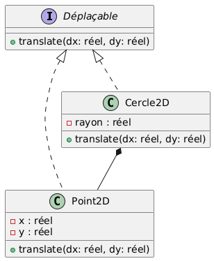
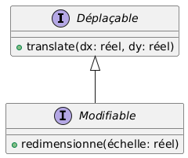
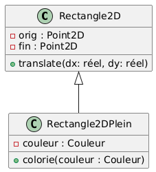

let mut array: [i32; 3] = [0; 3];
array[1] = 1;
array[2] = 2;
assert_eq!([1, 2], &array[1..]);
for x in array {
print!("{} ", x);
}Rust
Stéphane Lopes <stephane.lopes@uvsq.fr>, Pablo de Oliveira Castro <pablo.oliveira@uvsq.fr>
Rust: Types composites et constructions spécifiques
Tableaux
Le type primitif tableau permet de manipuler
des collections de taille fixe
allouées sur la pile
d’éléments de même type
La création d’un tableau se fait :
à partir d’une liste d’éléments entre
[]([1, 3, 5, 7]), ouà partir d’une expression et d’un nombre de copies (
[x; N]N copies de x)
L’accès aux éléments se fait par indice (
t[0])
src/rust/exemples/array.rs
Les vecteurs
Pour représenter un tableau de valeurs de taille variable, Rust propose le type
Vec<T>Les vecteurs sont alloués dynamiquement sur le tas.
création d’un vecteur (src/rust/exemples/vec.rs)
let mut v: Vec<i32> = Vec::new();
v.push(5);
v.push(6);
v.push(7);
let w: Vec<i32> = vec![5, 6, 7]; //macro équivalentAccéder aux éléments d’un vecteur (src/rust/exemples/vec.rs)
let mut v = vec![1, 2, 3, 4, 5];
let x: &i32 = &v[2]; // panique si l'index n'existe pas
match v.get(2) {
Some(y) => println!("v[3] == {}", y),
None => println!("index non-existant")
}
v[2] = 42; // car le vecteur v est mutableInitialisation avec une taille connue (src/rust/exemples/vec.rs)
let n : usize = 100; (1)
let zero_v = vec![0; n];
let one_v = vec![1; n];| 1 | usize est le type entier pour les positions d’un vecteur. |
Itérer sur un vecteur (src/rust/exemples/vec.rs)
let mut v = vec![1, 2, 3, 4, 5];
// itération non-mutable, i est de type &i32
for i in &v {
println!("{}", i);
}
// itération mutable, i est de type &mut i32
// on peut incrémenter chaque élément du vecteur
for i in &mut v {
*i += 1;
}Itérer sur un vecteur sans référence (src/rust/exemples/vec.rs)
let mut v = vec![1, 2, 3, 4, 5];
// itération directement sur le vecteur les éléments du vecteur
// sont « déplacés » dans i. v ne pourra plus être utilisé par la
// suite.
for i in v {
println!("{}", i);
}
//v[0] = 15; (1)| 1 | ERREUR : borrow of moved value: `v`. Nous verrons précisément ce point dans le cours sur le Borrow Checker. |
Généricité
Le type de
vec![1,2,3]eststd::Vec<i32>Le type de
vec!["a","b","c"]eststd::Vec<&str>std::Vec<T>est générique de paramètreTTpeut être remplacé ici par tout autre typeLes méthodes de
std::Vec<T>peuvent utiliser le type générique:
pub fn push(&mut self, value: T) // empile un élément en fin de vecteur
pub fn pop(&mut self) -> Option<T> // dépile un élémentStructures
Une structure est un type composite composé de membres
src/rust/exemples/struct.rs
struct Personne {
nom: String,
année_naissance: i32,
}
let mut ada = Personne {
nom : String::from("Ada Lovelace"),
année_naissance: 0,
};
println!("nom = {}", ada.nom);
ada.année_naissance = 1815;Constructeur
On appelle constructeur une fonction qui retourne une instance de la structure.
Dans le cours suivant nous verrons comment associer directement des méthodes à une structure.
src/rust/exemples/struct.rs
fn nouvelle_personne(nom: String, année: i32) -> Personne {
Personne {
année_naissance: année,
nom, // sucre syntaxique
}
}Tuples
Le type primitif tuples regroupe un ensemble de valeurs de types hétérogènes
src/rust/exemples/tuple.rslet tuple = ("hello", 5, 'c'); (1) assert_eq!(tuple.0, "hello"); (2) assert_eq!(tuple.1, 5); assert_eq!(tuple.2, 'c'); let (x, y, z) = tuple; (3) assert_eq!(z, 'c');1 le type de tupleest(&'static str, i32, char)2 accès aux champs par .0,.1, …3 pattern matching pour déconstruire le tuple Les structures tuples sont un cas particulier de structure où les membres ne sont pas nommés (similaires au type primitif tuple)
src/rust/exemples/tuple.rsstruct ColorRGB(u8, u8, u8); let color = ColorRGB(255, 0, 0); // On peut utiliser .0 .1 pour nommer les champs println!("red channel = {}", color.0); // On peut aussi déconstruire la structure avec du pattern matching let ColorRGB(r, g, b) = color;
Enum
Les types
Enumsont des types disjoints.Chaque instance ne peut avoir qu’un seul des types à la fois.
src/rust/exemples/enum.rs
enum Variant { (1)
Rien,
Nombre(i32),
Texte(String),
}
let v1: Variant = Variant::Rien;
let v2: Variant = Variant::Nombre(42);
let v3: Variant = Variant::Texte(String::from("Hello"));| 1 | Variant peut contenir au choix un entier signé, une chaîne ou rien du tout. |
Pattern matching
Le pattern matching permet de
représenter un structure conditionnelle avec plusieurs branches
déconstruire les types composites
Le pattern matching est très pratique pour manipuler les types
Enum
src/rust/exemples/enum.rs
fn affiche(v: Variant) {
match v {
Variant::Rien => println!("Le variant est vide"),
Variant::Nombre(n) => println!("Le variant contient le nombre {}", n),
Variant::Texte(s) => println!("Le variant contient le texte {}", s),
}
}
affiche(v1);
affiche(v2);
affiche(v3);Gestion des erreurs
En C/C++, on représente souvent l’absence de valeur par un pointeur
nullptr.cet usage est cause de nombreuses erreurs difficiles à détecter, c’est pourquoi Rust interdit les références nulles.
Rust utilise le type
Option<T>avec deux variantsNonequi représente l’absence de valeurSome(T)qui représente une valeur de typeT(Test un type générique)
src/rust/exemples/option.rs
fn racine(n : f64) -> Option<f64> {
if n > 0.0 {
Some(n.sqrt())
} else {
None
}
}
racine(25.0); // -> Some(5.0)
racine(-25.0); // -> None
if let Some(r) = racine(25.0) { (1)
println!("La racine est {}", r);
} else {
println!("Pas de racine réelle");
}
// panique si None
let v : f64 = racine(25.0).unwrap();
let v : f64 = racine(25.0).expect("erreur: racine d'un nombre négatif"); | 1 | if let permet de déconstruire une valeur d’un type composite |
std::Result<T,E>
Resultest semblable à une option mais permet d’encoder une erreur de typeE.
enum Result<T, E> {
Ok(T),
Err(E)
}Erreurs fatales
Souvent une fonction a intérêt à retourner un
Resultà l’appelant et lui laisser décider de la marche à suivre en cas d’erreur.Parfois, cela n’a pas de sens et il vaut mieux arrêter le programme avec la macro
panic!():
panic!("This is not implemented yet.");Consommation de la valeur Result
Contrairement à
Option`, unResultdoit toujours être utilisé.Le compilateur génère un avertissement si un
Resultn’est pas consommé.
src/rust/exemples/option.rs
let r : Result<File, std::io::Error> = File::open("hello.txt");
let f : File = match r {
Ok(fichier) => fichier,
Err(erreur) => panic!("Erreur d'ouverture: {:?}", erreur),
};Conversions entre Result<T, E> et Option<T>
Les types
ResultetOptionsont proches.Il est possible de convertir un
ResultenOptionavecres.ok()et inversement avecopt.ok_or(err).
src/rust/exemples/option.rs
let x: Result<u32, &str> = Ok(10);
assert_eq!(Some(10), x.ok());
let x: Result<u32, &str> = Err("Erreur");
assert_eq!(None, x.ok());
assert_eq!(Ok(10), Some(10).ok_or("Erreur"));
let x : Option<u32> = None;
assert_eq!(Err("Erreur"), x.ok_or("Erreur"));Gestion fine d’erreurs
src/rust/exemples/option.rs
let f = File::open("hello.txt");
let f = match f {
Ok(fichier) => fichier,
Err(erreur) => match erreur.kind() {
ErrorKind::NotFound => match File::create("hello.txt") {
Ok(fc) => fc,
Err(e) => panic!("Erreur de création du fichier : {:?}", e),
},
autre_erreur => {
panic!("Erreur d'ouverture du fichier : {:?}", autre_erreur)
}
},
};Raccourci avec expect
src/rust/exemples/option.rs
let f = File::open("hello.txt").expect("Échec à l'ouverture de hello.txt");Propagation d’Erreurs
Vos propres fonctions peuvent retourner des erreurs
src/rust/exemples/option.rs
fn lire_fichier_1() -> Result<String, io::Error> {
let f = File::open("hello.txt");
let mut f = match f {
Ok(fichier) => fichier,
Err(e) => return Err(e),
};
let mut s = String::new();
match f.read_to_string(&mut s) {
Ok(_) => Ok(s),
Err(e) => Err(e),
}
}Opérateur ?
Écrire du code qui propage les erreurs est fastidieux
L’opérateur
?peut-être utilisé dans les fonctions qui retournentResultpour en faciliter l’écrituresi le résultat est
Err, l’opérateur?retourne l’erreur.si le résultat est
Ok(x), l’opérateur?retournex.
src/rust/exemples/option.rs
fn lire_fichier_2() -> Result<String, io::Error> {
let mut s = String::new();
File::open("hello.txt")?.read_to_string(&mut s)?; (1)
Ok(s)
}| 1 | À chaque utilisation de ? si une erreur se produit, celle-ci est directement retournée et on sort de la fonction |
Exercice
Faire une somme de nombres imaginaires.
src/rust/exemples/imag.rs
#[derive(Debug,PartialEq)]
struct Imaginary {
real: f64,
im: f64,
}
fn sum(vs: &Vec<Imaginary>) -> Imaginary {
let mut res = Imaginary {real:0.0, im: 0.0};
for e in vs {
res.real += e.real;
res.im += e.im;
}
res
}
fn main() {
let v = vec!(
Imaginary{real:1.0, im:1.0}, Imaginary{real:2.0, im:2.0},
Imaginary{real:3.0, im:3.0}, Imaginary{real:4.0, im:4.0},
Imaginary{real:5.0, im:5.0});
assert_eq!(Imaginary{real:15.0, im:15.0}, sum(&v));
}Concepts objet en Rust
Introduction
Les choix de conception du langage ne proposent pas formellement de notion d’objet
Selon les définitions, Rust supporte ou ne supporte pas la programmation objet
Les concepts du langage permettent d’implémenter les concepts objets de façon efficace et élégante
Objet
Lors de son exécution, un système OO est un ensemble d’objets qui interagissent
les objets forment donc l'aspect dynamique (à l’exécution) d’un système OO
Un objet est formé de deux composants indissociables
son état les valeurs prises par des variables le décrivant (propriétés)
son comportement les opérations qui lui sont applicables
Un objet est une instance d’une classe
Dans certains langages objet (Self ou les anciennes versions de Javascript), la notion de classe n’existe pas. Les objets sont alors créés à partir de modèles nommés prototypes. Un objet peut avoir plusieurs types, i.e. supporter plusieurs interfaces
Exemple : des points et des cercles

Les objets
point1etpoint2sont des points,cercle1est un cercleL’état de chaque objet est représenté par la valeur de ses propriétés
Le centre du cercle est une référence sur un objet point
Le comportement n’est pas représenté au niveau des objets
une opération est invoquée par rapport à un objet
mais est rattachée à la classe (le code est partagé par tous les objets d’une classe)
Les objets
point1etpoint2sont égaux mais pas identiques
Encapsulation et masquage de l’information
L'encapsulation consiste à regrouper au sein d’une unique entité des données et des routines les manipulant
Ce principe est souvent associé au masquage de l’information qui permet de cacher les détails d’implémentation
Ce sont des piliers de l’approche objet
isole les structures internes de leur utilisation et donc autorise leur modification sans impact sur l’interface
permet d’ajouter des règles de validation ou des contraintes d’intégrité sur les données
contrôle le couplage entre les modules
Objets en Rust
Rust ne propose pas d’objet en tant que tel
Cependant, les valeurs d’un type se comportent de la même façon
De plus, par défaut, la structure interne des types Rust est privée
fn main() {
let mut v : Vec<i32> = Vec::new();
v.push(12);
v.len = 15;
println!("{:?}", v);
}$ rustc vec.rs
error[E0616]: field `len` of struct `Vec` is private
--> vec.rs:4:7
|
4 | v.len = 15;
| ^^^ private field
error: aborting due to previous error
For more information about this error, try `rustc --explain E0616`.Exemple : des points et des cercles en Rust
let point1 = Point::from(1.0, 2.0);
assert_eq!(point1.abscissa(), 1.0);
assert_eq!(point1.ordinate(), 2.0);
let point2 = Point::from(1.0, 2.0);
assert_eq!(point2.abscissa(), 1.0);
assert_eq!(point2.ordinate(), 2.0);
let circle1 = Circle::from(point1, 2.0); (1)
assert_eq!(circle1.center(), &Point::from(1.0, 2.0));
assert_eq!(circle1.radius(), 2.0);| 1 | la valeur de point1 est déplacée et point1 n’est donc plus valide |
Communication par messages
Un objet solitaire n’a que peu d’intérêt ⇒ différents objets doivent pouvoir interagir
Un message est un moyen de communication (d’interaction) entre objets
Les messages sont les seuls moyens d’interaction entre objets
⇒ l’état interne ne doit pas être manipulé directement
Le (ou les) type(s) d’un objet détermine les messages qu’il peut recevoir
Message
Un message est une requête envoyée à un objet pour demander l’exécution d’une opération
Un message comporte trois composants:
l’objet auquel il est envoyé (le destinataire du message),
le nom de l’opération à invoquer,
les paramètres effectifs.
Exemple : déplacer un cercle
L’utilisateur envoie un message à un objet (à une instance de) cercle
Le message se traduit par l’exécution de l’opération
translate(1.0, 2.0)par l’objet cercleDurant cette exécution, le cercle envoie un message à l’objet point (translater le cercle revient à translater son centre)
Méthodes en Rust
Le concept de méthode implémente les messages
Une méthode
est définie dans le contexte d’une structure, d’une énumération ou d’un trait,
possède toujours un premier paramètre nommé
selfet représentant l’instance sur laquelle la méthode est invoquée
Exemple : le rayon du cercle
impl Circle {
/// Retourne le rayon du cercle.
pub fn radius(&self) -> f64 {
self.radius
}
}Exemple : déplacer un cercle
let p = Point::from(6.0, 9.0);
let mut c = Circle::from(p, 5.0);
c.move_by(4.0, 1.0);
assert_eq!(c.center(), &Point::from(10.0, 10.0));
assert_eq!(c.radius(), 5.0);Fonction associée
Une fonction associée (associated functions) est une fonction définie dans le contexte d’une structure
Il est possible de définir une telle fonction sans le paramètre
selfinvoquée par l’intermédiaire du nom de la structure (
Rectangle::square(3))
Cette notion est à rapprocher du concept de méthode de classe
Une fonction qui retourne une instance d’une structure est dénommée constructeur
Selfpeut être utilisé pour référencer le type se trouvant aprèsimpl
impl Point {
/// Initialise un point à partir de coordonnées cartésiennes.
pub fn from(x: f64, y: f64) -> Self {
Self {
x,
y,
}
}
}Type
Un type est un modèle abstrait réunissant à un haut degré les traits essentiels de tous les êtres ou de tous les objets de même nature
En informatique, un type (de donnée) spécifie:
l’ensemble des valeurs possibles pour cette donnée (définition en extension),
l’ensemble des opérations applicables à cette donnée (définition en intention).
Un type spécifie l'interface par laquelle une donnée peut être manipulée
Exemple : un type Déplaçable

Type en Rust : les traits
Un trait (
trait) précise un ensemble d’opérations dont doit disposer un typeUne méthode d’un trait peut être abstraite ou disposer d’une implémentation par défaut
Un trait est proche de la notion d'interface ou de classe abstraite dans d’autres langages
Exemple : le trait Déplaçable
pub trait Movable {
/// Déplace l'élément d'un décalage donné
fn move_by(&mut self, dx: f64, dy: f64);
/// Retourne true si l'élément se trouve à la position en paramètre.
fn is_at(&self, x: f64, y: f64) -> bool;
}Exemple : l’implémentation du trait Déplaçable dans Point
impl Movable for Point {
/// Déplace le point.
/// # Examples
///
/// ```
/// use shapes::movable::Movable;
/// use shapes::point::Point;
/// let mut point = Point::from(6.0, 9.0);
///
/// point.move_by(4.0, 1.0);
/// assert_eq!(point.abscissa(), 10.0);
/// assert_eq!(point.ordinate(), 10.0);
/// ```
fn move_by(&mut self, dx: f64, dy: f64) {
self.x += dx;
self.y += dy;
}
/// Retourne true si le point est à la position en paramètre.
fn is_at(&self, x: f64, y: f64) -> bool {
self.x == x && self.y == y
}
}Classe
Une classe est un "modèle" (un "moule") pour une catégorie d’objets structurellement identiques
Une classe définit donc l’implémentation d’un objet (son état interne et le codage de ses opérations)
L’ensemble des classes décrit l'aspect statique d’un système OO
Structure d’une classe
Une classe comporte:
la définition des attributs (ou variables d’instance),
la signature des opérations (ou méthodes),
la réalisation (ou définition) des méthodes.
Chaque instance aura sa propre copie des attributs (son état)
La signature d’une opération englobe son nom et le type de ses paramètres
L’ensemble des signatures de méthodes représente l’interface de la classe (publique)
L’ensemble des définitions d’attributs et de méthodes forme l’implémentation de la classe (privé)
Exemple : les classes Cercle2D et Point2D

Un rectangle représente une classe
1er pavé: nom de la classe
2ième pavé: attributs
3ième pavé: signature des méthodes
en général, les attributs sont privés et les méthodes publiques
Instanciation d’une classe
Le mécanisme d'instanciation permet de créer des objets à partir d’une classe
Chaque objet est une instance d’une classe
Lors de l’instanciation,
de la mémoire est allouée pour l’objet,
l’objet est initialisé (appel du constructeur) afin de respecter l’invariant de la classe.
Classes en Rust
Les structures (
struct) et les énumérations (enum) permettent de créer de nouveaux types de donnéesLes champs d’une structure ou les variantes d’une énumération peuvent être associés à des fonctions grâce à des blocs d’implémentation (
impl)L’encapsulation est assurée par les différentes constructions du langage (fonctions, méthodes, structures, énumérations, modules, et constantes)
par défaut, tout est privé
le mot-clé
pubpermet d’exporter les constructions souhaitées
Exemple : la structure Cercle
use crate::movable::Movable;
use crate::point::Point;
pub struct Circle {
center: Point,
radius: f64,
}
/// Définit une structure pour un cercle en 2D.
/// # Examples
///
/// ```
/// use shapes::point::Point;
/// use shapes::circle::Circle;
///
/// let c = Circle::from(Point::from(6.0, 9.0), 5.0);
///
/// assert_eq!(c.center(), &Point::from(6.0, 9.0));
/// assert_eq!(c.radius(), 5.0);
/// ```
///
impl Circle {
/// Initialise un cercle à partir de son centre et de son rayon.
pub fn from(center: Point, radius: f64) -> Self {
Self {
center,
radius,
}
}
/// Retourne le centre du cercle.
pub fn center(&self) -> &Point {
&self.center
}
//tag::circle_radius[]
/// Retourne le rayon du cercle.
pub fn radius(&self) -> f64 {
self.radius
}
//end::circle_radius[]
}
impl Movable for Circle {
/// Déplace le cercle.
/// # Examples
///
/// ```
/// use shapes::movable::Movable;
/// use shapes::point::Point;
/// use shapes::circle::Circle;
/// let mut p = Point::from(6.0, 9.0);
/// let mut c = Circle::from(p, 5.0);
///
/// c.move_by(4.0, 1.0);
/// assert_eq!(c.center(), &Point::from(10.0, 10.0));
/// assert_eq!(c.radius(), 5.0);
/// ```
fn move_by(&mut self, dx: f64, dy: f64) {
self.center.move_by(dx, dy);
}
/// Retourne true si le centre du cercle est à la position en paramètre.
fn is_at(&self, x: f64, y: f64) -> bool {
self.center.abscissa() == x && self.center.ordinate() == y
}
}Classe et type
Une classe implémente un ou plusieurs types, i.e. respecte une ou plusieurs interfaces
Un objet peut avoir plusieurs types mais est une instance d’une seule classe
Des objets de classes différentes peuvent avoir le même type
Exemple : cercles et points sont de type Déplaçable

Sous-type
Un type T1 est un sous-type d’un type T2 si l’interface de T1 contient l’interface de T2. De façon duale, un type T1 est un sous-type d’un type T2 si l’ensemble des instances de T2 inclut l’ensemble des instances de T1. |
Un sous-type possède une interface plus riche, i.e. au moins toutes les opérations du super-type
De manière équivalente, l’extension du super-type contient l’extension du sous-type, i.e. tout objet du sous-type est aussi instance du super-type
Exemple : Déplaçable et Modifiable

Héritage
L'héritage permet de définir l’implémentation d’une classe à partir de l’implémentation d’une autre
Ce mécanisme permet, lors de la définition d’une nouvelle classe, de ne préciser que ce qui change par rapport à une classe existante
Une hiérarchie de classes permet de gérer la complexité, en ordonnant les classes au sein d’arborescences d’abstraction croissante
Si Y hérite de X, on dit que
Y est une classe fille (sous-classe, classe dérivée) et que
X est une classe mère (super-classe, classe de base)
Exemple : rectangle et rectangle plein

Héritage en Rust
|
Il est toutefois possible de manipuler des éléments sous la forme d'objet trait (trait object)
Un tel objet pointe vers une instance d’un type implémentant le trait concerné
la taille d’un objet trait ne peut pas être déterminée lors de la compilation
Le type d’un objet trait est construit à partir d’un type de pointeur (référence ou smart pointer), du mot-clé
dynet du nom du traitUn objet trait dispose d’une table de méthodes virtuelles (vtable)
Exemple : objet trait
let c = Circle::from(Point::from(1.0, 1.0), 1.0);
let c_as_movable_ref : &dyn Movable = &c;
assert!(c_as_movable_ref.is_at(1.0, 1.0)); (1)
let circle_as_movable_box : Box<dyn Movable> =
Box::new(
Circle::from(Point::from(1.0, 1.0), 1.0)
);
assert!(circle_as_movable_box.is_at(1.0, 1.0)); (1)| 1 | Seules les méthodes du trait sont accessibles (typage statique) |
Héritage et sous-typage
L’héritage (ou héritage d’implémentation) est un mécanisme technique de réutilisation
Le sous-typage (ou héritage d’interface) décrit comment un objet peut être utilisé à la place d’un autre
Si Y est une sous-type de X, cela signifie que "Y est une sorte de X" (relation IS-A)
Dans un langage de programmation, les deux visions peuvent être représentées de la même façon: le mécanisme d’héritage permet d’implémenter l’un ou l’autre
Exemple : héritage d’implémentation et d’interface

Polymorphisme
Le polymorphisme est l’aptitude qu’ont des objets à réagir différemment à un même message
L’intérêt est de pouvoir gérer une collection d’objets de façon homogène tout en conservant le comportement propre à chaque type d’objet
Une méthode commune à une hiérarchie de classe peut avoir plusieurs implémentations dans différentes classes
Une sous-classe peut redéfinir une méthode de sa super-classe pour spécialiser son comportement
Le choix de la méthode à appeler est retardé jusqu’à l’exécution du programme (dynamic dispatch)
Exemple : une description pour les rectangles

Polymorphisme en Rust
La table des méthodes virtuelles d’un objet trait permet de retarder le choix de la méthode à exécuter au moment de l’exécution
Déplacer des formes
let mut shapes : Vec<Box<dyn Movable>> = vec![
Box::new(Point::from(1.0, 2.0)),
Box::new(Circle::from(Point::from(3.0, 4.0), 5.0)),
];
for shape in shapes.iter_mut() {
shape.move_by(1.0, 2.0);
}
assert!(shapes[0].is_at(2.0, 4.0));
assert!(shapes[1].is_at(4.0, 6.0));Classe abstraite
Une classe abstraite représente un concept abstrait qui ne peux pas être instancié
En général, son comportement ne peut pas être intégralement implémenté à cause de son niveau de généralisation
Elle sera donc seulement utilisée comme classe de base dans une hiérarchie d’héritage
Exemple : La hiérarchie d’héritage des figures

Classe abstraite en Rust
| Rust ne comporte pas de notion aussi générale que celle de classe abstraite cependant les traits permettent d’approcher ce comportement dans certains contextes. |
Héritage multiple et à répétition
Un héritage multiple se produit lorsqu’une classe possède plusieurs super-classes
Un héritage à répétition se produit lorsqu’une classe hérite plusieurs fois d’une même super-classe
Ces types d’héritage peuvent provoquer des conflits aux niveaux des attributs et méthodes
deux classes de base peuvent posséder la même méthode,
un attribut peut être hérité selon plusieurs chemins dans le graphe d’héritage.
Exemple : une hiérarchie pour les véhicules

Combien de numéros d’immatriculation possède la voiture amphibie ?
Quelle opération est invoquée quand une voiture amphibie reçoit le message
avance?